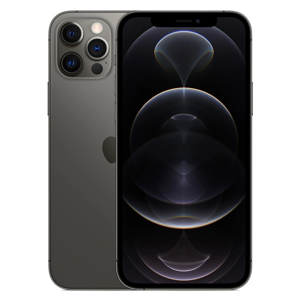
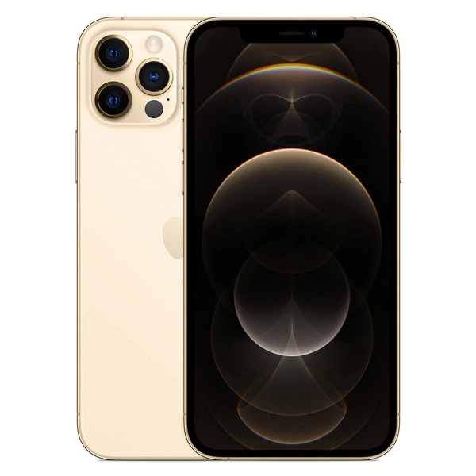
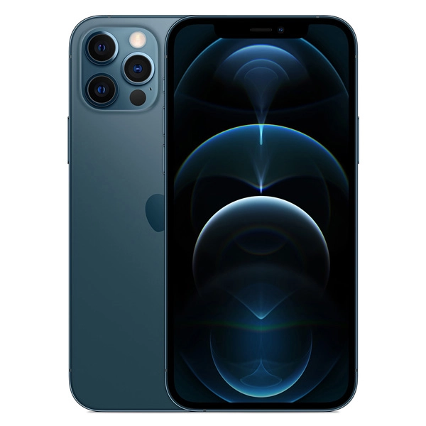

Iphone 12 pro
Perak

Abu-abu Grafit

Emas

Biru Pasifik
Bagian depan Ceramic Shield, Bagian belakang kaca matte bertekstur dan desain baja tahan karat
Kapasitas1
Ukuran dan Berat2
- Lebar: 71,5 mm
- Tinggi: 146,7 mm
- Tebal: 7,4 mm
- Berat: 187 g
Layar
- Layar Super Retina XDR
- Layar OLED menyeluruh 6,1 inci (diagonal)
- Resolusi 2532 x 1170 piksel pada 460 ppi
- Layar HDR
- True Tone
- Warna luas (P3)
- Haptic Touch
- Rasio kontras 2.000.000:1 (umum)
- Kecerahan maks 800 nit (umum); kecerahan maks 1.200 nit (HDR)
- Lapisan oleophobic anti sidik jari
- Mendukung tampilan berbagai bahasa dan karakter secara bersamaan
Layar iPhone 12 Pro memiliki sudut melengkung yang mengikuti desain lekukan yang indah, dan semua sudut ini berada di dalam bidang persegi standar. Jika diukur sebagai persegi standar, layarnya berukuran 6,06 inci secara diagonal (area bidang layar berukuran lebih kecil).
Tahan Cipratan, Air, dan Debu3
- Level IP68 (kedalaman maksimum 6 meter hingga selama 30 menit) menurut standar IEC 60529
Chip
- Chip A14 Bionic
- Neural Engine generasi berikutnya
Kamera
- Sistem kamera pro 12 MP: Ultra Wide, Wide, dan Telefoto
- Ultra Wide: bukaan ƒ/2.4 dan bidang pandang 120°
- Wide: bukaan ƒ/1.6
- Telefoto: bukaan ƒ/2.0
- Zoom optik 2x memperbesar, zoom optik 2x memperkecil; rentang zoom optik 4x
- Zoom digital hingga 10x
- Potret mode Malam dimungkinkan oleh LiDAR Scanner
- Mode Potret dengan bokeh yang disempurnakan dan Depth Control
- Pencahayaan Potret dengan enam efek (Alami, Studio, Kontur, Panggung, Panggung Mono, High-Key Mono)
- Penstabilan gambar optik ganda (Wide dan Telefoto)
- Lensa lima elemen (Ultra Wide); lensa enam elemen (Telefoto); lensa tujuh elemen (Wide)
- Flash True Tone lebih terang dengan Slow Sync
- Panorama (hingga 63 MP)
- Penutup lensa kristal safir
- 100% Focus Pixels (Wide)
- Mode Malam (Ultra Wide, Wide)
- Deep Fusion (Ultra Wide, Wide, Telefoto)
- Smart HDR 3
- Apple ProRAW
- Pengambilan foto dan Live Photo dengan rentang warna luas
- Koreksi lensa (Ultra Wide)
- Koreksi mata merah yang disempurnakan
- Penanda lokasi foto
- Penstabilan gambar otomatis
- Mode beruntun
- Format gambar yang diambil: HEIF dan JPEG
Perekaman Video
- Mampu merekam video HDR dengan Dolby Vision pada kecepatan hingga 60 fps
- Mampu merekam video 4K pada kecepatan 24 fps, 25 fps, 30 fps, atau 60 fps
- Mampu merekam video HD 1080p pada kecepatan 25 fps, 30 fps atau 60 fps
- Mampu merekam video HD 720p pada kecepatan 30 fps
- Penstabilan gambar optik sensor bergerak untuk video (Wide)
- Penstabilan gambar optik untuk video (Wide dan Telefoto)
- Zoom optik 2x memperbesar, zoom optik 2x memperkecil; rentang zoom optik 4x
- Zoom digital hingga 6x
- Zoom audio
- Flash True Tone lebih terang
- Video QuickTake
- Dukungan video slo-mo untuk 1080p pada kecepatan 120 fps atau 240 fps
- Video selang waktu dengan penstabilan
- Selang waktu mode Malam
- Rentang dinamis yang diperluas untuk video hingga kecepatan 60 fps
- Penstabilan video sinematik (4K, 1080p, dan 720p)
- Video fokus otomatis kontinu
- Mengambil foto 8 MP sambil merekam video 4K
- Zoom pemutaran
- Format video yang direkam: HEVC dan H.264
- Perekaman stereo
Kamera TrueDepth
- Kamera 12 MP
- Bukaan ƒ/2.2
- Mode Potret dengan bokeh yang disempurnakan dan Depth Control
- Pencahayaan Potret dengan enam efek (Alami, Studio, Kontur, Panggung, Panggung Mono, High-Key Mono)
- Animoji dan Memoji
- Mode Malam
- Deep Fusion
- Smart HDR 3
- Mampu merekam video HDR dengan Dolby Vision pada kecepatan hingga 30 fps
- Mampu merekam video 4K pada kecepatan 24 fps, 25 fps, 30 fps, atau 60 fps
- Mampu merekam video HD 1080p pada kecepatan 25 fps, 30 fps atau 60 fps
- Dukungan video slo-mo untuk 1080p pada kecepatan 120 fps
- Video selang waktu dengan penstabilan
- Selang waktu mode Malam
- Rentang dinamis yang diperluas untuk video hingga kecepatan 30 fps
- Penstabilan video sinematik (4K, 1080p, dan 720p)
- Video QuickTake
- Pengambilan foto dan Live Photo dengan rentang warna luas
- Koreksi lensa
- Retina Flash
- Penstabilan gambar otomatis
- Mode beruntun
Face ID
- Hadir berkat kamera TrueDepth untuk pengenalan wajah
Seluler dan Nirkabel
- Model A2407*
5G NR (Band n1, n2, n3, n5, n7, n8, n12, n20, n25, n28, n38, n40, n41, n66, n77, n78, n79)
FDD-LTE (Band 1, 2, 3, 4, 5, 7, 8, 12, 13, 17, 18, 19, 20, 25, 26, 28, 30, 32, 66)
TD-LTE (Band 34, 38, 39, 40, 41, 42, 46, 48)
UMTS/HSPA+/DC-HSDPA (850, 900, 1700/2100, 1900, 2100 MHz)
GSM/EDGE (850, 900, 1800, 1900 MHz)
- Model A2411*
5G NR (Band n1, n2, n3, n5, n7, n8, n12, n20, n25, n28, n38, n40, n41, n66, n77, n78, n79)
FDD-LTE (Band 1, 2, 3, 4, 5, 7, 8, 12, 13, 17, 18, 19, 20, 25, 26, 28, 30, 32, 66)
TD-LTE (Band 34, 38, 39, 40, 41, 42, 46, 48)
UMTS/HSPA+/DC-HSDPA (850, 900, 1700/2100, 1900, 2100 MHz)
GSM/EDGE (850, 900, 1800, 1900 MHz)
- Semua model
5G (sub-6 GHz)
Gigabit LTE dengan 4x4 MIMO dan LAA4
Wi‑Fi 6 (802.11ax) dengan 2x2 MIMO
Teknologi nirkabel Bluetooth 5.0
Chip Ultra Wideband untuk kesadaran spasial5
NFC dengan mode pembaca
Kartu Express dengan penghematan daya
Lokasi
- GPS, GLONASS, Galileo, QZSS, dan BeiDou bawaan
- Kompas digital
- Wi‑Fi
- Seluler
- Mikrolokasi iBeacon
Panggilan Video6
- Panggilan video FaceTime melalui seluler atau Wi‑Fi
- Panggilan video FaceTime HD (1080p) melalui 5G atau Wi-Fi
Panggilan Audio6
Pemutaran Audio
- Format audio yang didukung: AAC‑LC, HE‑AAC, HE‑AAC v2, Protected AAC, MP3, Linear PCM, Apple Lossless, FLAC, Dolby Digital (AC‑3), Dolby Digital Plus (E‑AC‑3), Dolby Atmos, dan Audible (format 2, 3, 4, Audible Enhanced Audio, AAX, dan AAX+)
- Pemutaran audio spasial
- Batas volume maksimum yang dapat dikonfigurasi pengguna
Pemutaran Video
- Format video yang didukung: HEVC, H.264, MPEG-4 Part 2, dan Motion JPEG
- HDR dengan Dolby Vision, HDR10, dan HLG
- AirPlay hingga HDR 4K untuk mirroring, foto, dan video ke Apple TV (generasi ke-2 atau lebih baru) atau smart TV berkemampuan AirPlay 2
- Dukungan video mirroring dan video keluar: Hingga 1080p melalui Adaptor AV Digital Lightning dan Adaptor Lightning ke VGA (adaptor dijual terpisah)7
Tombol dan Konektor Eksternal
- Volume naik/turun
- Berdering/Hening
- Tombol samping
- Speaker stereo bawaan
- Mikrofon bawaan
- Konektor Lightning
Daya dan Baterai8
- Pemutaran video: Hingga 17 jam
- Pemutaran video (streaming): Hingga 11 jam
- Pemutaran audio: Hingga 65 jam
- Baterai lithium-ion bawaan yang dapat diisi ulang
- Pengisian daya nirkabel MagSafe hingga 15W9
- Pengisian daya nirkabel Qi hingga 7,5W9
- Mengisi daya melalui USB ke sistem komputer atau adaptor daya
- Pengisian daya cepat: Pengisian daya hingga 50% dalam waktu sekitar 30 menit10 dengan adaptor 20W atau lebih tinggi (dijual terpisah)
MagSafe
- Pengisian daya nirkabel hingga 15W9
- Rangkaian magnet
- Magnet penempatan
- NFC Identifikasi Aksesori
- Magnetometer
Sensor
- Face ID
- LiDAR Scanner
- Barometer
- Gyro tiga sumbu
- Akselerometer
- Sensor kedekatan jarak
- Sensor cahaya sekitar
Sistem Operasi
iOS 14
iOS adalah sistem operasi seluler paling personal dan aman di dunia, dilengkapi dengan fitur andal dan dirancang untuk melindungi privasi Anda.
Lihat yang baru di iOS
Aksesibilitas
Fitur aksesibilitas membantu penyandang disabilitas memaksimalkan iPhone baru mereka. Dengan dukungan bawaan untuk penglihatan, pendengaran, mobilitas, dan pembelajaran, Anda bisa benar-benar menikmati perangkat paling personal di dunia. Pelajari lebih lanjut mengenai Aksesibilitas.
Fitur-fitur meliputi:
- VoiceOver
- Zoom
- Pembesar
- Dukungan RTT dan TTY
- Dikte
- Kontrol Pengalihan
- Teks Tertulis
- AssistiveTouch
- Ucapkan Layar
- Ketuk Bagian Belakang
Kartu SIM
- SIM ganda (nano‑SIM dan eSIM)11
- iPhone 12 Pro dan iPhone 12 Pro Max tidak kompatibel dengan kartu micro-SIM yang ada.
Peringkat untuk Alat Bantu Dengar
Dukungan Lampiran Mail
- Jenis dokumen yang dapat dilihat
.jpg, .tiff, .gif (gambar); .doc dan .docx (Microsoft Word); .htm dan .html (halaman web); .key (Keynote); .numbers (Numbers); .pages (Pages); .pdf (Preview dan Adobe Acrobat); .ppt dan .pptx (Microsoft PowerPoint); .txt (text); .rtf (rich text format); .vcf (informasi kontak); .xls dan .xlsx (Microsoft Excel); .zip; .ics; .usdz (USDZ Universal)
Persyaratan Sistem
- ID Apple (diperlukan untuk beberapa fitur)
- Akses Internet12
- Penyelarasan dengan Mac atau PC memerlukan:
- macOS Catalina 10.15 atau lebih baru menggunakan Finder
- macOS El Capitan 10.11.6 sampai macOS Mojave 10.14.6 menggunakan iTunes 12.8 atau lebih baru
- Windows 7 atau lebih baru menggunakan iTunes 12.10.10 atau lebih baru (unduh gratis dari apple.com/id/itunes/download)
Persyaratan Lingkungan
- Suhu lingkungan pengoperasian: 0° hingga 35° C
- Suhu non-operasional: −20° hingga 45° C
- Kelembapan relatif: 5% hingga 95% non-kondensasi
- Ketinggian beroperasi: teruji hingga 3.000 meter
Bahasa
- Dukungan bahasa
Inggris (Australia, Inggris, AS), Tionghoa (Sederhana, Tradisional, Hong Kong Tradisional), Prancis (Kanada, Prancis), Jerman, Italia, Jepang, Korea, Spanyol (Amerika Latin, Meksiko, Spanyol), Arab, Katalan, Kroasia, Ceko, Denmark, Belanda, Finlandia, Yunani, Ibrani, Hindi, Hungaria, Indonesia, Melayu, Norwegia, Polandia, Portugis (Brasil, Portugal), Rumania, Rusia, Slovakia, Swedia, Thai, Turki, Ukraina, Vietnam
- Dukungan papan ketik QuickType
Inggris (Australia, Kanada, India, Singapura, Inggris, AS), Tionghoa — Sederhana (Tulisan Tangan, Pinyin QWERTY, Pinyin 10 Key, Shuangpin, Stroke), Tionghoa — Tradisional (Cangjie, Tulisan Tangan, Pinyin QWERTY, Pinyin 10 Key, Shuangpin, Stroke, Sucheng, Zhuyin), Prancis (Belgia, Kanada, Prancis, Swiss), Jerman (Austria, Jerman, Swiss), Italia, Jepang (Kana, Romaji), Korea (2-Set, 10 Key), Spanyol (Amerika Latin), Meksiko, Spanyol), Albania, Arab (Standar Modern, Najdi), Armenia, Assam, Azerbaijan, Belarusia, Bodo, Bulgaria, Burma, Kanton — Tradisional (Cangjie, Tulisan Tangan, Stroke, Sucheng), Katalan, Cherokee, Kroasia, Ceko, Denmark, Dhivehi, Dogri, Belanda, Emoji, Estonia, Faroe, Filipina, Finlandia, Flemish, Georgia, Yunani, Gujarati, Hawaii, Ibrani, Hindi (Devanagari, Latin, Transliterasi), Hungaria, Islandia, Indonesia, Gaelic Irlandia, Kannada, Kashmir (Arab, Devanagari), Kazakh, Khmer, Konkani (Devanagari), Kurdi (Arab, Latin), Kirgistan, Lao, Latvia, Lituania, Makedonia, Maithili, Melayu (Jawi, Latin), Malayalam, Malta, Manipuri (Bengali, Meetei Mayek), Māori, Marathi, Mongolia (Sirilik), Nepal, Norwegia (Bokmål, Nynorsk), Odia, Pashtun, Persia (Afghanistan), Polandia, Portugis (Brasil, Portugal), Punjabi, Rumania, Rusia, Sanskerta, Santali (Devanagari, Ol Chiki), Serbia (Sirilik, Latin), Sindhi (Arab, Devanagari), Sinhala, Slovakia, Slovenia, Swahili, Swedia, Tajik, Tamil (Anjal, Tamil 99), Telugu, Thai, Tibet, Tonga, Turki, Turkmen, Ukraina, Urdu, Uighur, Uzbek (Arab, Sirilik, Latin), Vietnam, Wales
- Dukungan papan ketik QuickType dengan koreksi otomatis
Arab (Standar Modern), Arab (Najdi), Bengali, Bulgaria, Katalan, Cherokee, Tionghoa - Sederhana (Pinyin QWERTY), Tionghoa - Tradisional (Pinyin QWERTY), Tionghoa - Tradisional (Zhuyin), Kroasia, Ceko, Denmark, Belanda, Inggris (Australia), Inggris (Kanada), Inggris (India), Inggris (Jepang), Inggris (Singapura), Inggris (Inggris), Inggris (AS), Esti, Filipina, Finlandia, Belanda (Belgia), Prancis (Belgia), Prancis (Kanada), Prancis (Prancis), Prancis (Swiss), Jerman (Austria), Jerman (Jerman), Jerman (Swiss), Yunani, Gujarat, Hawaii, Ibrani, Hindi (Devanagari), Hindi (Transliterasi), Hungaria, Islandia, Indonesia, Gaelic Irlandia, Italia, Jepang (Kana), Jepang (Romaji), Korea (2-set), Latvia, Lituania, Makedonia, Melayu, Marathi, Norwegia (Bokmål), Norwegia (Nynorsk), Persia, Persia (Afghanistan), Polandia, Portugis (Brasil), Portugis (Portugal), Punjabi, Rumania, Rusia, Serbia (Sirilik), Serbia (Latin), Slovakia, Slovenia, Spanyol (Amerika Latin), Spanyol (Meksiko), Spanyol (Spanyol), Swedia, Tamil (Anjal), Tamil (Tamil 99), Telugu, Thai, Turki, Ukraina, Urdu, Vietnam
- Dukungan papan ketik QuickType dengan input prediktif
Inggris (Australia, Kanada, India, Singapura, Inggris, AS), Tionghoa (Sederhana, Tradisional), Prancis (Belgia, Kanada, Prancis, Swiss), Jerman (Austria, Jerman, Swiss), Italia, Jepang, Korea, Spanyol (Amerika Latin, Meksiko, Spanyol), Arab (Standar Modern, Najdi), Kanton (Tradisional), Belanda, Hindi (Devanagari, Latin), Portugis (Brasil, Portugal), Rusia, Swedia, Thailand, Turki, Vietnam
- Dukungan papan ketik QuickType dengan input beberapa bahasa
Inggris (AS), Inggris (Australia), Inggris (Kanada), Inggris (India), Inggris (Singapura), Inggris (Inggris), Tionghoa — Sederhana (Pinyin), Tionghoa — Tradisional (Pinyin), Prancis (Prancis), Prancis (Belgia), Prancis (Kanada), Prancis (Swiss), Jerman (Jerman), Jerman (Austria), Jerman (Swiss), Italia, Jepang (Romaji), Portugis (Brasil), Portugis (Portugal), Spanyol (Spanyol), Spanyol (Amerika Latin), Spanyol (Meksiko), Belanda (Belgia), Belanda (Belanda), Hindi (Latin)
- Dukungan papan ketik QuickType dengan saran kontekstual
Inggris (AS), Inggris (Australia), Inggris (Kanada), Inggris (India), Inggris (Singapura), Inggris (Inggris), Tionghoa (Sederhana), Prancis (Belgia), Prancis (Kanada), Prancis (Prancis), Prancis (Swiss), Jerman (Austria), Jerman (Jerman), Jerman (Swiss), Italia, Spanyol (Amerika Latin), Spanyol (Meksiko), Spanyol (Spanyol), Arab (Standar Modern), Arab (Najdi), Belanda (Belgia), Belanda (Belanda), Hindi (Devanagari), Hindi (Latin), Rusia, Swedia, Portugis (Brasil), Turki, Vietnam
- Bahasa Siri
Inggris (Australia, Kanada, India, Irlandia, Selandia Baru, Singapura, Afrika Selatan, Inggris, AS), Spanyol (Cile, Meksiko, Spanyol, AS), Prancis (Belgia, Kanada, Prancis, Swiss), Jerman (Austria, Jerman, Swiss), Italia (Italia, Swiss), Jepang (Jepang), Korea (Korea Selatan), Mandarin (Tiongkok Daratan, Taiwan), Kanton (Tiongkok Daratan, Hong Kong), Arab (Arab Saudi, Uni Emirat Arab), Denmark (Denmark), Belanda (Belgia, Belanda), Finlandia (Finlandia), Ibrani (Israel), Melayu (Malaysia), Norwegia (Norwegia), Portugis (Brasil), Rusia (Rusia), Swedia (Swedia), Thai (Thailand), Turki (Turki)
- Bahasa dikte
Inggris (Australia, Kanada, India, Indonesia, Irlandia, Malaysia, Selandia Baru, Filipina, Arab Saudi, Singapura, Afrika Selatan, UEA, Inggris, AS), Spanyol (Argentina, Chili, Kolombia, Kosta Rika, Republik Dominika, Ekuador, El Salvador, Guatemala, Honduras, Meksiko, Panama, Paraguay, Peru, Spanyol, Uruguay, AS), Prancis (Belgia, Kanada, Prancis, Luksemburg, Swiss), Jerman (Austria, Jerman, Luksemburg, Swiss), Italia (Italia, Swiss), Jepang, Korea, Mandarin (Tiongkok daratan, Taiwan), Kanton (Tiongkok daratan, Hong Kong, Makau), Arab (Kuwait, Qatar, Arab Saudi, UEA), Katalan, Kroasia, Ceko, Denmark, Belanda (Belgia, Belanda), Finlandia, Yunani, Ibrani, Hindi (India), Hungaria, Indonesia, Melayu, Norwegia, Polandia, Portugis (Brasil, Portugal), Rumania, Rusia, Shanghai (Tiongkok daratan), Slovakia, Swedia, Thailand, Turki, Ukraina, Vietnam
- Dukungan kamus definisi
Inggris (Inggris, AS), Tionghoa (Sederhana, Tradisional), Denmark, Belanda, Prancis, Jerman, Ibrani, Hindi, Italia, Jepang, Korea, Norwegia, Portugis, Rusia, Spanyol, Swedia, Thai, Turki
- Dukungan kamus dwibahasa
Arab – Inggris, Tionghoa (Sederhana) – Inggris, Tionghoa (Tradisional) – Inggris, Belanda – Inggris, Prancis – Inggris, Prancis – Jerman, Jerman – Inggris, Hindi – Inggris, Indonesia – Inggris, Italia – Inggris, Jepang – Inggris, Jepang – Tionghoa (Sederhana), Korea – Inggris, Polandia – Inggris, Portugis – Inggris, Rusia – Inggris, Spanyol – Inggris, Thai – Inggris, Vietnam – Inggris
- Tesaurus
Inggris (Inggris, AS)
- Pemeriksaan ejaan
Inggris, Prancis, Jerman, Italia, Spanyol, Arab, Arab Najdi, Denmark, Belanda, Finlandia, Korea, Norwegia, Polandia, Portugis, Rusia, Swedia, Turki
- Wilayah yang didukung Apple Pay
Australia, Austria, Belarusia, Belgia, Brasil, Bulgaria, Kanada, Tiongkok daratan,12 Kroasia, Siprus, Republik Ceko, Denmark, Estonia, Kepulauan Faroe, Finlandia, Prancis, Georgia, Jerman, Yunani, Greenland, Guernsey, Hong Kong, Hungaria, Islandia, Irlandia, Pulau Man, Italia, Jepang, Jersey, Kazakhstan, Latvia, Liechtenstein, Lituania, Luksemburg, Makau, Malta, Montenegro, Belanda, Selandia Baru, Norwegia, Polandia, Portugal, Rumania, San Marino, Arab Saudi, Serbia, Singapura, Slovakia, Slovenia, Spanyol, Swedia, Swiss, Taiwan, Inggris, Ukraina, Uni Emirat Arab, AS, Kota Vatikan
Isi Kotak
- iPhone dengan iOS 14
- Kabel USB‑C ke Lightning
- Dokumentasi